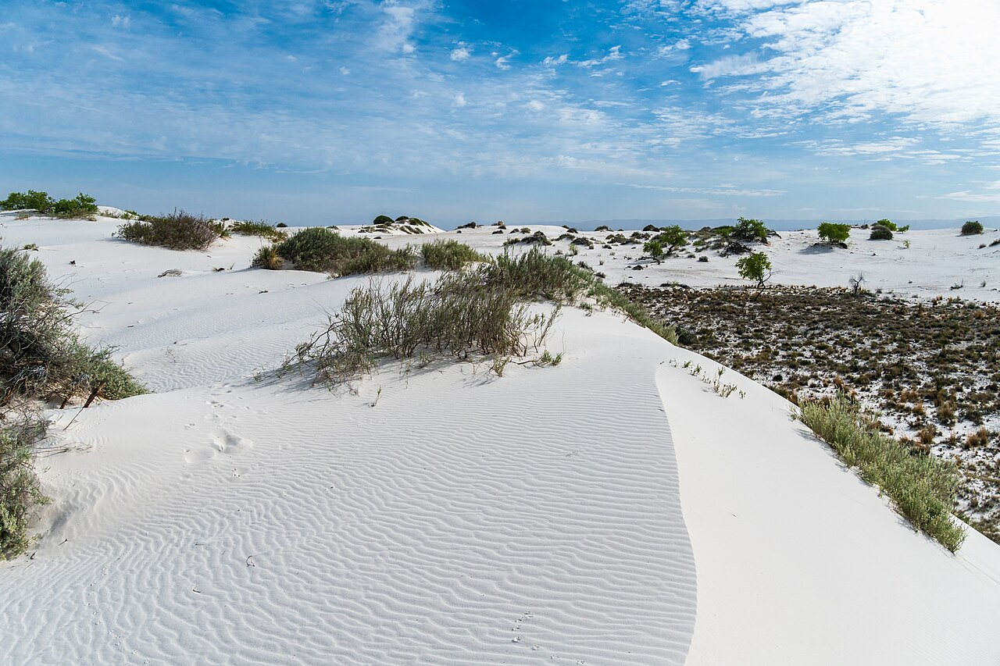

White Sands and Carlsbad Caverns from El Paso · 5-day family itinerary
Five days from El Paso for a ten-year-old and a seven-year-old. White Sands gets two goes, because the missile range next door can close the only road into the dunes for up to three hours; then a long drive east past Guadalupe Mountains to walk down into Carlsbad Cavern and watch the bats leave at dusk.

Photo: dconvertini, White Sands National Park, New Mexico, USA, CC BY-SA 2.0, via Wikimedia Commons. Photographed in May; this plan runs in September.

Checked before you commit
This illustrative route flies into El Paso, Texas, which the National Park Service (NPS) calls the closest airport to White Sands, about 85 miles (137 km) away. It stays two nights in Alamogordo and two in Carlsbad, New Mexico, and flies home from El Paso. NPS pages for White Sands, Carlsbad Caverns and Guadalupe Mountains, and the NPS alerts feed for all three, were read on 18 November 2026. Nothing was booked.
Two bases, one airport, one long day. NPS puts Alamogordo about 15 minutes from White Sands Visitor Center. Day 3 drives back through El Paso and east on US 62/180 because NPS publishes those distances: about 82 miles from Alamogordo to El Paso, 110 on to Guadalupe Mountains and 56 more to Carlsbad. We didn’t check other routes.
Dunes in the cool hours. NPS advises against hiking at 85 °F (29 °C) or hotter, so the dunes are mornings and evenings, with a midday break in Alamogordo. The longest walks are a one-mile loop at White Sands and about 2.5 miles underground at Carlsbad, half of it steeply downhill; an elevator brings you back up.
We didn’t check flights, the hire car, hotels, the 2027 Sunset Stroll schedule or bat flight times. Fees are as NPS showed them on 18 November 2026. Carlsbad Cavern needs a US$1 timed-entry reservation and a separate entrance ticket bought at the visitor centre. A booking-hub link doesn’t hold a room, a car or a cavern slot.
Planning boundary: dates are illustrative; the worked example runs Thursday 23 to Monday 27 September 2027, five days counted from the flight in to the flight home. NPS runs the Carlsbad bat flight program every evening from April to October and says the biggest flights are usually in August and September. In 2026 White Sands ran Sunset Strolls on Fridays, Saturdays and Sundays, which is why the dunes day is a Friday.
NPS says tests on White Sands Missile Range can close Dunes Drive, the only road into the dunes, for up to three hours, sometimes with as little as 24 hours’ notice. Alfred doesn’t check test schedules, park alerts, weather or cavern reservations, and doesn’t buy park passes. A booking-hub link doesn’t prove a booking.
Route and family-coordination brief
Party: two adults, a ten-year-old and a seven-year-old. Bases: Alamogordo, New Mexico, for two nights, then Carlsbad, New Mexico, for two. Pace: dunes early and late, a rest in the heat of the day, one long driving day. Assumption: flights in and out of El Paso and a hire car collected there; we didn’t check routes, flights or fares.
Missile-test rule: NPS says Dunes Drive may close for up to three hours while White Sands Missile Range runs tests, that the range can notify the park as little as 24 hours ahead, and that the visitor centre and gift shop stay open during closures. US Highway 70 towards Las Cruces may also close, so this plan drives in from El Paso on US 54 through Alamogordo. Its closures page listed two November 2026 tests, both 7 to 8 am.
Corridor rule: NPS alerts show a safety corridor on Dunes Drive between mile markers 3 and 5.5, which NPS links to the recovery effort after a US Air Force mishap in the park. You may drive through it but not stop or get out, and the Interdune Boardwalk inside it is closed. By NPS’s mileages, the Dune Life Nature Trail (2.8 miles) and the sledding areas in the loop at the end of the drive lie outside it.
Cavern rule: NPS requires a timed-entry reservation for Carlsbad Cavern, US$1 on recreation.gov or by phone, and says it only selects your entry time. Entrance tickets, US$15 for each visitor aged 16 or over and free for children 15 and under, are bought at the visitor centre. Last entry is 2:30 pm, walkers must be out by 3:30 pm, and the last elevator up leaves at 4:45 pm.
Fee rule: White Sands charges US$25 a private vehicle, valid for re-entry for seven days, cash or card at the entrance station; Guadalupe Mountains charges US$10 for each visitor aged 16 or over, valid one to seven days. By our arithmetic, two adults pay US$75 across the three parks, plus the US$1 reservation. The non-resident America the Beautiful pass is US$250. None of the three fee pages listed a non-resident surcharge when we read them.
Left out: the Alkali Flat Trail, which NPS times at 3 to 5 hours over steep dunes; backcountry camping at White Sands, which NPS says is closed; ranger-guided cave tours; the Guadalupe Peak hike; and Walnut Canyon Desert Drive at Carlsbad, which NPS says is closed after flood damage.
In Alfred, while the trip is still Planning, you can keep or change the hotel and then the flights Alfred picked, and browse the activity and meal carousels. Their Like toggles aren’t saved, so a like isn’t a record of a decision. We did not test whether city search offers Alamogordo or Carlsbad, or whether Alfred plans flights into El Paso.
Day 1 — Fly into El Paso, drive to Alamogordo, read the test schedule
Fly into El Paso and collect the hire car you booked. NPS says no public transport serves White Sands, and that rideshare drivers who bring visitors to the park generally won’t pick them up. We haven’t checked flight times, so the day stays open until you land.
Drive north on US 54 to Alamogordo, about 82 miles by NPS’s directions. Fill the tank there; NPS says Alamogordo has the nearest fuel to the park. Buy water for tomorrow: NPS recommends a gallon (about 4 litres) a person a day and says the visitor centre is the only place in the park with water.
Open the White Sands military testing closures page and note any test listed for Friday or Saturday, with its times and whether US 70 is blocked.
Fallback: if you land early, drive the 15 minutes to White Sands Visitor Center, open 9 am to 5 pm, for the 17-minute film, a junior ranger book and the sledding saucers, then save the dunes for tomorrow.
Live-check: your flight time; the hire car pick-up; NPS alerts; the closures page.
Day 2 — White Sands: a nature trail, sledding, a midday rest and the Sunset Stroll
The gates open at 7 am. Pay the US$25 vehicle fee at the entrance station, a quarter of a mile past the visitor centre, and keep the receipt for Saturday. At 2.8 miles, just before the safety corridor, walk the Dune Life Nature Trail: a moderate one-mile loop over dunes up to 30 feet high, following blue posts with a club symbol, about an hour. NPS says it has very little shade.
At 9 am, back at the visitor centre, buy or rent waxed plastic saucers at the gift shop and pick up junior ranger books. Then drive Dunes Drive without stopping through the corridor to the loop at the end, where NPS allows sledding away from the road and plants and suggests the Roadrunner picnic area. Sit with feet downhill; NPS says children aged 5 to 9 are the most likely to be hurt and shouldn’t sled alone.
Drive back to Alamogordo for lunch and a rest before the afternoon heat. We didn’t read a forecast for September 2027; if it is 85 °F (29 °C) or hotter, NPS advises against strenuous activity in the dunes.
If it is running, join the free Sunset Stroll: in 2026 NPS listed it at 6 pm on Fridays to Sundays from 6 to 26 September, meeting at a signed car park about eight miles past the fee station. It is a half-mile ranger walk of 45 minutes to an hour over moderate dunes, with no toilets. Bring a jacket; NPS says the temperature drops as the sun goes down.
Fallback: if a test closes Dunes Drive this morning, spend it at the visitor centre, which NPS says stays open, and move the trail and sledding to the late afternoon or to Saturday morning.
Live-check: the closures page; the forecast and any heat advisory, which NPS says cancels the Sunset Stroll; the 2027 stroll schedule; tonight’s sunset time.
Day 3 — A stand-by morning on the dunes, then east past Guadalupe Mountains
If Friday lost its dunes to a test or the weather, this is the second go: the gates open at 7 am and Friday’s vehicle fee is still valid. If Friday went to plan, have a slow breakfast instead. Either way, our suggestion is to be on the road by about 10 am, because this is the long day.
Drive back down US 54 to El Paso, then east on US 62/180. NPS puts Guadalupe Mountains National Park 110 miles east of El Paso and says no fuel is available for 35 miles either side of its visitor centre, so fill up in El Paso. By our arithmetic the day is about 250 miles of driving.
Stop at Pine Springs Visitor Center, which NPS lists as open 8 am to 4 pm, for the one-hour visit NPS suggests: the museum and the Pinery Nature Trail. Entrance is US$10 for each visitor aged 16 or over, by card at the visitor centre or at a self-pay station. Then drive 56 miles on to Carlsbad, past White’s City, where the cavern road starts.
Fallback: if the stand-by morning ran long, skip Guadalupe Mountains and drive straight through; it is a leg-stretch, not the point of the day.
Live-check: NPS alerts for Guadalupe Mountains; your Carlsbad check-in time; fuel before you leave El Paso.
Day 4 — Down the Natural Entrance into Carlsbad Cavern, then the bats
Drive 20 miles to White’s City and seven miles up the park road, which NPS says is steep, narrow and winding in places, for a 9:30 am timed entry, the first walking-in time NPS lists. Show the US$1 reservation and buy entrance tickets: US$15 for each adult, free for the children. Bring a light jacket; NPS says the cavern is 56 °F (13 °C) all year. Only plain water is allowed inside.
Walk down the Natural Entrance Trail: 1.25 miles (2 km), about an hour, losing about 750 feet, which NPS likens to walking down a 75-storey building. It is steep and wet in places, so wear closed shoes with grip. At the bottom, walk the Big Room Trail, 1.25 miles and about an hour and a half, or its shortcut, about 0.6 miles and 45 minutes. NPS says the only underground toilets are at the Underground Lunchroom.
Ride the elevator up; the last one leaves at 4:45 pm, but you will be out long before. Rest in the afternoon.
Back at the visitor centre, walk about five minutes to the Bat Flight Amphitheater at the Natural Entrance for the free ranger talk before the Brazilian free-tailed bats fly out. No reservations; seating is first come, first served, and the start time moves with sunset. NPS bans all electronic devices there, phones and cameras included.
Fallback: if either child balks at the steep descent, take the elevator both ways and walk the Big Room; NPS suggests that route for visitors with about an hour.
Live-check: your timed-entry reservation; NPS alerts; the bat program start time on the park calendar; lightning, which NPS says can cancel the program.
Day 5 — Back along US 62/180 to El Paso and the flight home
Leave Carlsbad after breakfast. NPS puts the White’s City turn-off 142 or 145 miles from El Paso, depending on the page, and Carlsbad is 20 miles further. We didn’t time the drive, so allow the whole morning, with a stop at Pine Springs if you skipped it on Day 3.
Return the car at El Paso and fly home.
Fallback: if the only flight leaves before about midday, the drive may not fit; look for a later flight before you book rather than rushing the road.
Live-check: your flight time; the car return time; road conditions on US 62/180.
Planning notes
Related travel note: A missile test closes the dunes, not the day.
Dates are illustrative. At decision time, recheck NPS alerts for all three parks, the White Sands military testing closures page (the evening before and the morning of each dunes visit), White Sands and Carlsbad hours and fees, the 2027 Sunset Stroll schedule, your Carlsbad timed-entry reservation, the forecast, your flights into El Paso, the car-hire pick-up and return, and your accommodation bookings.
Why the dunes get two goes. By our reading, a closure of up to three hours can take a morning but not a day. If a test lands on Friday morning, the visitor centre stays open, and Friday afternoon and Saturday morning are still there. NPS posts upcoming tests on its closures page but says notice from the range can be as short as 24 hours, so read it on Thursday evening and again on Friday morning.
Sunset is a closing time. NPS says White Sands opens at 7 am every day and, outside summer hours, closes 30 minutes after local sunset, which it says comes eight minutes earlier than Alamogordo’s predicted sunset. In 2026 it closed an hour after sunset from 22 May to 7 September. NPS says the 16-mile round trip on Dunes Drive takes about 45 minutes, so start back early.
What we couldn’t confirm. We didn’t read a weather forecast; NPS gives an average high of 97 °F (36 °C) in June and July, says most rain falls from early July to late September, and that fast-building thunderstorms are common from July to September. NPS doesn’t give bat flight start times, which move with sunset. It gives El Paso to the Carlsbad turn-off at White’s City as 142 or 145 miles on different pages, and Dunes Drive as four or five paved miles.
The phone clock. NPS says Guadalupe Mountains is on Mountain Time and that your phone will probably show the wrong time there. Pine Springs Visitor Center is listed as open 8 am to 4 pm, so if you are cutting it fine on Day 3, go by the clock on its wall, not the one on your phone.
Plan a trip
Start with your people, dates and pace, then review the editable plan before booking.
Plan a trip